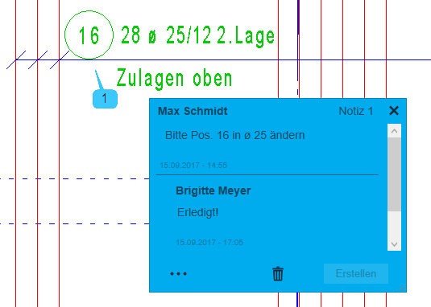
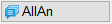
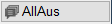
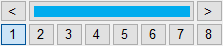
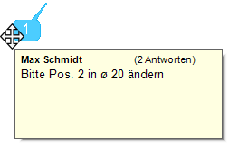
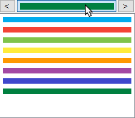

")
Alternativ: Mittlere Maustaste auf Notiz-Icon.
Mit dieser Funktion können Sie Notizen in die Zeichnung einfügen.
Verwendung
Mit der Notizfunktion in ISBCAD können Sie innerhalb einer Zeichnung Informationen hinterlegen. So lassen sich beispielsweise Feedback zu Teilzeichnungen geben, bestimmte Bereiche hervorheben oder kürzlich geänderte Stellen kennzeichnen.
Die Notizen stehen allen Bearbeitern der Zeichnung zur Verfügung und können jederzeit bearbeitet oder ergänzt werden. Zu jedem Notizeintrag werden relevante Informationen wie Datum, Uhrzeit und Benutzername gespeichert. Dadurch ist der vollständige Änderungsverlauf eines Eintrags jederzeit nachvollziehbar.
Ist ISBCAD auf Ihrem Rechner nicht installiert, können Sie Notizen in einer AKT-Zeichnung auch mit dem Programm ISBVIEW anzeigen.
 |
Bearbeitung von Notizen
Notizen können im Wesentlichen nur mit den Funktionen im Notizprogramm bearbeitet werden. Daher können Notizen u. a. nicht:
·ausgedruckt, geplottet oder in einer PDF-Datei ausgegeben werden,
·in die Zwischenablage kopiert oder ausgelagert werden,
·im DWG-, DXF- oder PDF-Format exportiert werden
·oder anderweitig bearbeitet werden.
Ausgenommen sind die Funktionen [Konst 1 | Versch] und [Konst 2 | Drehen/Spiege]. Mit diesen Funktionen können eingeblendete Notiz-Icons zusammen mit den zugehörigen Zeichenelementen selektiert und neu positioniert werden. Notizen lassen sich nur über die Auswahl mit Rahmen auswählen und können nicht einzeln selektiert werden. Wenn Notizen nicht selektiert werden sollen, blenden Sie diese mit [AllAus] aus.
Funktionen |
Beschreibung |
|---|---|
Erzeugt eine neue Notiz. |
|
  |
AllAn: Blendet alle Notiz-Icons ein. |
Optionen |
Beschreibung |
|---|---|
 |
Auswahl der Farbe für die Notiz. |
§Um eine Notiz zu erzeugen, klicken Sie einen beliebigen Punkt auf der Zeichenfläche an. [Lage].
Das Notiz-Fenster wird eingeblendet und die Notiz-Nummer wird automatisch hochgezählt.
§Schreiben oder kopieren Sie Text mit beliebigen Zeichen in das Eingabefeld.
Mit der Eingabetaste fügen Sie einen Zeilenumbruch ein.
§Um die Notiz zu erstellen, klicken Sie auf Erstellen.
Notiz ändern oder ergänzen
Wenn Sie einen Notiz-Eintrag bearbeiten möchten, klicken Sie den entsprechenden Eintrag an. Das Eingabefeld wird eingeblendet und Sie können den Eintrag bearbeiten. Um die Änderung zu übernehmen, klicken Sie abschließend auf Erstellen.
Texte über das Kontextmenü oder Tastenkombinationen bearbeiten
Sie können Texte über das Kontextmenü oder über Tastenkombinationen in eine Notiz hineinkopieren, aus dieser ausschneiden oder aus anderen Quellen einfügen.
Tastenkombinationen nutzen·Strg+X - Text ausschneiden ·Strg+C - Text kopieren ·Strg+V - Text einfügen Solange das Eingabefeld der Notiz den Fokus hat, können Sie die Tastenkombinationen in ISBCAD unabhängig von den in den Systemdaten eingestellten Hotkeys verwenden. |
Kontextmenü aufrufenDas Kontextmenü rufen Sie mit einem Rechtsklick im Eingabefeld auf. Wenn Sie einen Text markieren und das Kontextmenü öffnen, stehen Ihnen alle Funktionen zur Verfügung, ansonsten ist nur die Einfüge-Funktion verfügbar.
|
Wenn Sie mit dem Cursor über das Notiz-Icon, das Notiz-Fenster oder die Notiz-Zeigerlinie fahren, ändert sich die Form des Cursors. Ziehen Sie mit gedrückter linker Maustaste das Notiz-Icon oder das Notiz-Fenster an eine andere Stelle.
Um die Zeigerlinie des Notiz-Icons auszurichten: Hinweis: Bei einem zu großen Zoomausschnitt wird die Zeigerlinie nicht mehr gefangen. Zoomen Sie in diesem Fall näher an das Notiz-Icon heran. |
Wenn Sie das Notiz-Fenster über den Bildschirmrand geschoben und ausgeblendet haben, wird dieses bei erneutem Öffnen wieder neben dem Notiz-Icon platziert.
Führen Sie einen der folgenden Schritte aus:
a)Fahren Sie mit dem Cursor über ein Notiz-Icon und klicken Sie dieses an.
Wenn das Notiz-Fenster sichtbar ist, wird es ausgeblendet oder eingeblendet, wenn zuvor nur das Notiz-Icon sichtbar war.
b)Um alle Notizen, die sich auf der Zeichnung befinden, ein- oder auszublenden, nutzen Sie die Funktionen im Funktionsbereich.
- Blendet alle Notiz-Icons ein. |
|
- Blendet alle Notizen (Icons + Notiz-Fenster) aus. |
Wenn das Eingabefenster geschlossen ist und Sie mit der Maus über einem Notiz-Icon verharren, wird eine Quickinfo eingeblendet. In dieser wird der Benutzername der Person angezeigt, die die Notiz erstellt hat sowie der erste Eintrag und die Gesamtzahl der Antworten bzw. Kommentare.

Im Funktionsbereich können Sie eine Farbe für neue Notizen auswählen. Klicken Sie mit der linken Maustaste auf das Auswahlfeld und anschließend die gewünschte Farbe an.
 |
Farbe des Notiz-Fensters ändern
Sie können jeder einzelnen Notiz nach dem Erzeugen eine andere Farbe zuweisen. Um die Farbauswahl zu öffnen, klicken Sie auf die 3-Punkte-Schaltfläche im unteren Bereich des Notiz-Fensters und wählen Sie eine andere Farbe aus.
Beachten Sie: Die Notiz wird ohne Rückfrage komplett mit allen eingetragenen Anmerkungen aus der Zeichnung entfernt. Das Wiederherstellen der Notiz mit einer Korrekturfunktion ist nicht möglich.
Wenn Sie eine Notiz versehentlich gelöscht haben, können Sie versuchen, einen vorherigen Speicherstand zu laden. Siehe: Sicherungdateien.
§Um die Notiz zu löschen, klicken Sie im Notiz-Fenster auf .
Die Notiz wird ohne Rückfrage aus der Zeichnung entfernt.